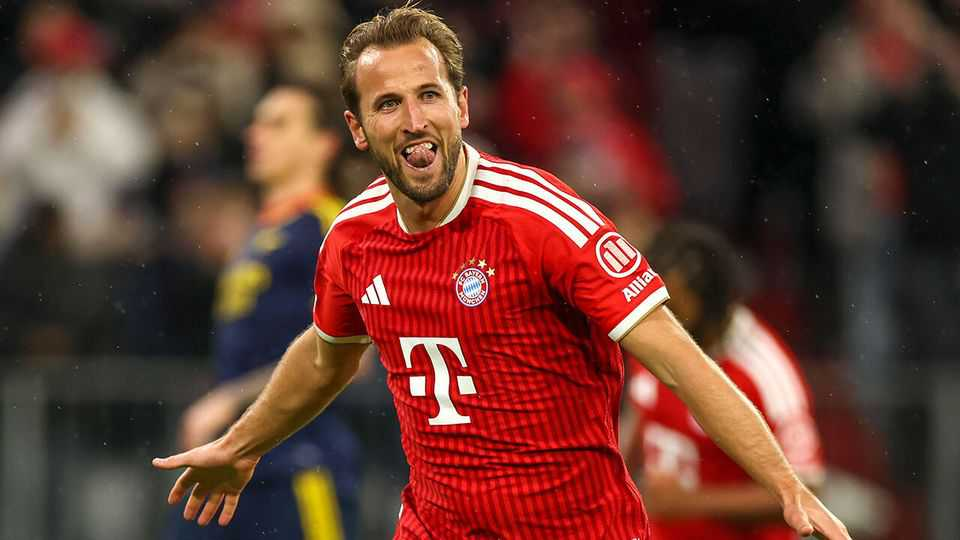

Did Harry Kane have to leave England to win the Ballon d’Or?
The Premier League’s greatest strength is also a weakness

Oct 29th 2026
The Men’s Ballon d’Or is the most prestigious individual prize in world football. This year’s ceremony was held in London to mark 70 years since Stanley Matthews, an Englishman from Stoke, won the very first Ballon d’Or in 1956. Few Britons have followed his example. It is 25 years since Michael Owen became the sixth British player to do so. On October 26th Harry Kane, England’s captain, became the seventh (and, excluding Scotland’s Denis Law and Northern Ireland’s George Best, the fifth Englishman).
The prize is well-deserved. Mr Kane stands out even among the superstars at Bayern Munich, a German club that have won their domestic league in nine of the last ten seasons. Watch him play and you will notice that he is much more than a goalscorer. But he is a goal machine. Mr Kane scored 61 goals for Bayern last season—19 more than any other player in Europe’s top five leagues and the highest tally anyone has managed since the 2014-15 campaign. Add the six he scored to become England’s all-time top World Cup goalscorer, and (with all due respect to Kylian Mbappé of Real Madrid and Lamine Yamal of Barcelona) it would have been a robbery had he not won the prize.
But Mr Kane’s brilliance is not new. In 2017, playing for Tottenham Hotspur, he became the first player in seven years to outscore Lionel Messi (a record-holding eight-time Ballon d’Or winner) and Cristiano Ronaldo (a five-time winner) over a calendar year. He scored 56 goals in 52 games for club and country, an astonishing record. Yet he came just tenth in the vote for the Ballon d’Or. Why?
Partly because he was playing in the Premier League. Since the league was created in 1992 only three of its players have won the Ballon d’Or (Mr Owen plus Mr Ronaldo, when the Portuguese superstar was at Manchester United, and Spain’s Rodri, when playing for Manchester City). That is not because Premier League players are scrubs. It is instead because the league’s competitiveness makes it difficult to rack up the accolades, and the goals, expected of a Ballon d’Or winner.
Historically, Europe’s top goalscorers have played in countries like Spain—where two clubs rule over an otherwise middling league. Those same European clubs tend to dominate the Champions League, the elite European contest, which carries a lot of weight in Ballon d’Or nominations; at Tottenham Mr Kane scored many goals but won no major trophies. English clubs have won just six Champions League titles since 2000. With talent more evenly spread, a Premier League season is gruelling. On October 14th Man City played Paris Saint-Germain (PSG), the French and European champions. PSG were able to rest eight of their starting 11 players in their previous game. Man City managed two, and were beaten convincingly.
The Premier League, with its large revenues and eye-popping wages, will always attract top talent. But true superstars rarely make England their home. Competitiveness, long the league’s greatest strength, is also its greatest weakness. ■